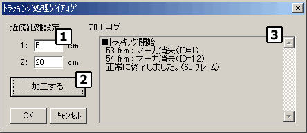
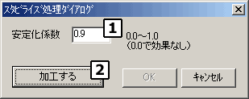
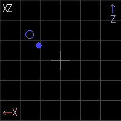

| データ加工 |
３Ｄモーショントラッカーは簡単なデータ加工機能を持っています。加工したモーションデータは、メニューの「名前を付けて保存」でファイルに保存できます。
|
トラッキング
|
マーカの追跡（トラッキング）を行うことで、「手、肘、肩・・・」のようにマーカを同定（identify）することができます。
最初のフレームを基準に、次フレームのマーカの中から最も自分に近いものを対応マーカとして決定しながら追跡を行います。「３Ｄモーショントラッカー」で行っているトラッキングと同じものですので、キャプチャ時にトラッキングを行わずに、ここで処理することが可能です。
メニューを選択すると以下のダイアログが表示されます。

２つの距離値を設定します。
実際のトラッキング処理では、まず１に設定した距離の範囲内で該当するマーカを探します。その範囲内に見つからない場合は２に設定した範囲内で探します。それでも見つからない場合は「マーカ消失」となり、該当マーカの追跡は終了となります。距離設定値が小さすぎると「マーカ消失」の可能性が高くなり、大きすぎると別のマーカを「誤認識」する可能性が高くなります。
トラッキング処理を開始します。処理の経過および結果は加工ログ【３】に表示されます。
「マーカ消失」などの情報が表示されます。この内容を参考に設定値などを調整してください。
|
スタビライズ
|
静止しているマーカでも、光学的な都合で「ブレ」が生じてしまう場合があります。 また、物体の動きに関しても、現実的に生じてしまうブレや揺れをなめらかにしたい場合があります。
ここでは、マーカの動きを「なまらせる」ことでブレや揺れを軽減する処理を行うことができます。
メニューを選択すると以下のダイアログが表示されます。

0.0から1.0の間で指定します。
0.0 に近いと、スタビライズの効果が低く、ブレの補正があまり効きません。
1.0 に近いと、スタビライズの効果が高くブレがよく補正されますが、急な動きに対して反応が鈍くなります。
スタビライズ処理を開始します。
|
加工前のマーカを表示
|
データ加工する直前のマーカを同時に表示します。

加工前のマーカは、同じ色で中が抜けた円 で表現されます。
|
Copyright (C) 2001 CyVerse
Corp.
|